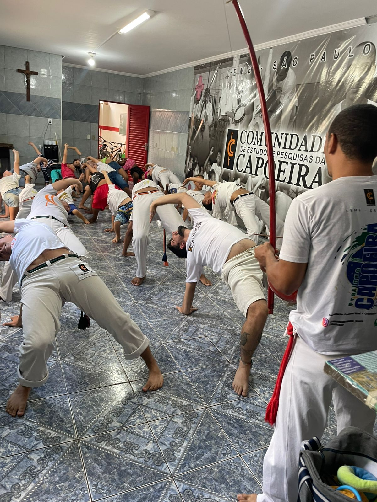

Capoeira Aurora - Janela para o Amanhecer
A capoeira é uma expressão cultural afro-brasileira que combina luta, dança, música e história, sendo reconhecida como um valioso patrimônio imaterial da cultura nacional. Com seu caráter inclusivo e dinâmico, a capoeira é uma poderosa ferramenta para a promoção de cidadania, disciplina e autoestima, ajudando seus praticantes a desenvolverem autocontrole, resistência física e respeito às diferenças — qualidades essenciais para a construção de uma sociedade mais justa e integrada.
Desde 2008, o projeto social Capoeira Aurora - Janela para o Amanhecer, mantido pela Congregação de Santa Maria Madalena Postel, oferece aulas gratuitas de capoeira, com o objetivo de transformar vidas em Leme/SP. Iniciado pela Irmã Ludwigis e coordenado pelo Mestre Idael Sousa, o projeto começou no bairro Jardim Imperial e, hoje com o apoio da Irmã Aurora Tenfen, expandiu-se para outros bairros da cidade. Até hoje, o projeto já atendeu aproximadamente 800 crianças, além de muitos jovens e adultos, proporcionando um espaço de aprendizado, cidadania e valorização cultural.
Mais do que uma atividade física, o projeto visa reduzir a vulnerabilidade social dos participantes, oferecendo um ambiente inclusivo e de desenvolvimento cultural e educacional. Através de aulas e eventos, os alunos encontram um espaço seguro e acolhedor onde podem evoluir física e emocionalmente, fortalecendo seus vínculos comunitários e ampliando suas perspectivas para o futuro.